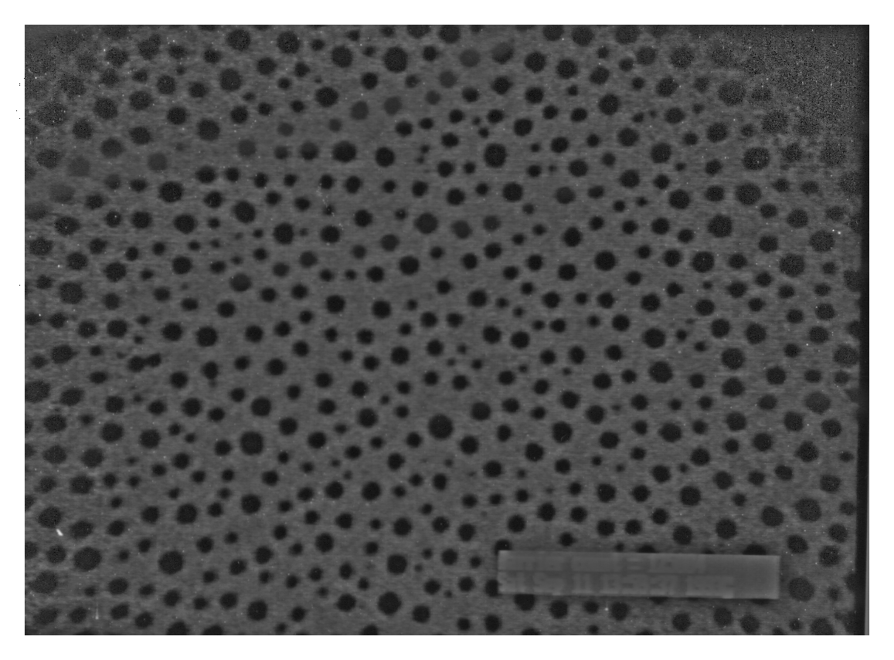
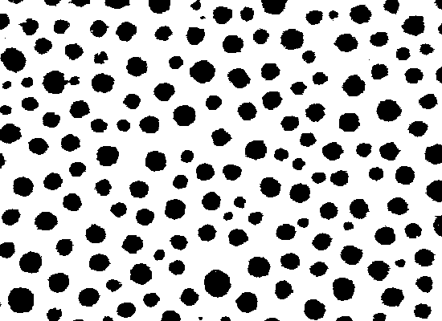

USAGE: threshm inimg outimg [-i] [-L]
threshm performs binarization with respect to
automatically determined intensity threshold;
the input gray-level image is converted to a binary image;
threshold determination is made by the moment-preservation
method.
ARGUMENTS:
inimg: input image filename (TIF)
outimg: output image filename (TIF)
OPTIONS:
-i: intensities ABOVE (lighter)
threshold set to 0
and
those BELOW (darker) threshold set to 255
-L: print Software License
for this module
Example:
threshm coarbc.tif coarbin.tif
coarbc.tif:

coarbin.tif: (using 300 200 850 600 as Area Of Interest)

Copyright (C) 1999 MLMSoftware Group, LLC.